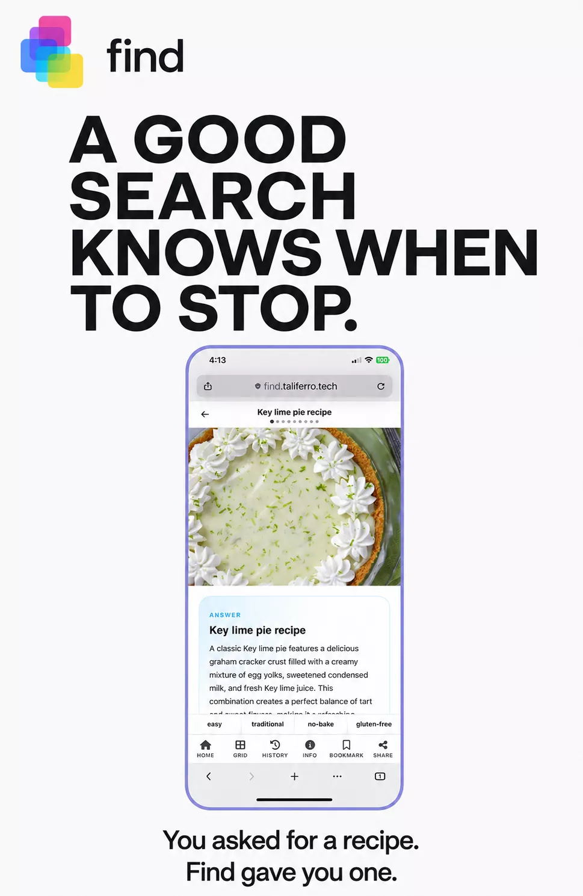

Most search tools hand you thousands of links and let you sort them out. Find leads with one confident answer, keeps nine more a swipe away, and gives you four context options — tap one, or tilt your phone toward it — to jump straight to what you actually meant. Search “Apple” and pick Music, Computers, TV, or Services instead of guessing which one the algorithm chose for you.

The Philosophy
“Most search tools optimize for clicks. Find optimizes for answers. We believe the best search experience ends with you knowing something — not choosing between 10 links that might.”
Ask Find a question and it leads with the answer it's most confident actually answers you. The other nine results are still there — a swipe away — but you're never forced to sort through all ten before you can start reading.
Tap or Tilt to Drill Down
Every search surfaces four pre-chosen context options based on what you asked. Type “Apple” and you'll see Music, Computers, TV, and Services — tap the one you meant, or tilt your phone toward it, and Find narrows in instead of you retyping a more specific search. Find is one of the free tools built alongside Taliferro's TODD.
No gimmicks, no accounts required to search — just the mechanics that make one-answer search work.
Find leads with its single best answer to your question. The other nine results are a swipe away if you need them — nothing is hidden, you're just not forced to sort through all ten first.
Four context options appear with every search. Tap one, or tilt your phone toward it, to jump straight to the specific meaning you're after.
Search is free, with no ads and no paywall. Saving results to your own Knowledge base is part of the fuller TODD experience.
Use the tool directly, or talk to Taliferro if the deeper problem is not search itself but workflow friction across the whole process.